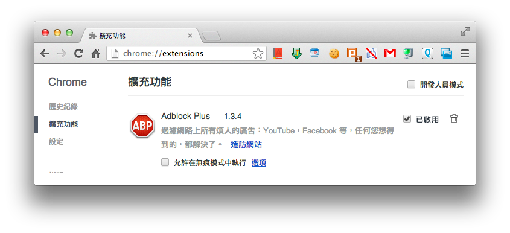
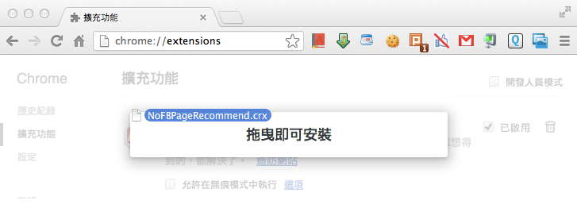
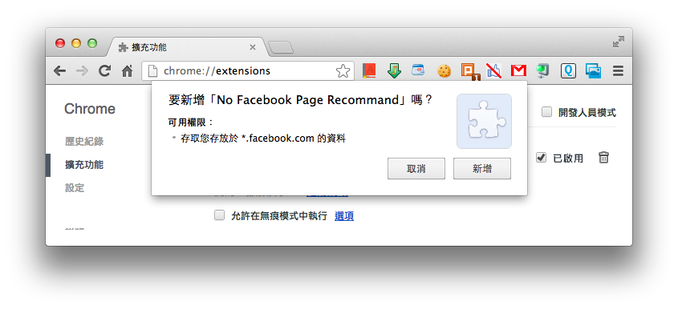
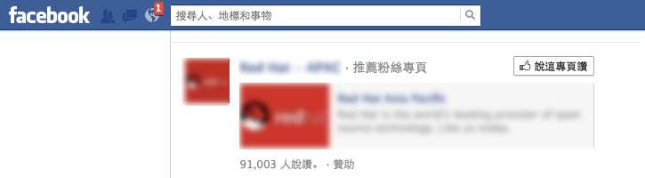
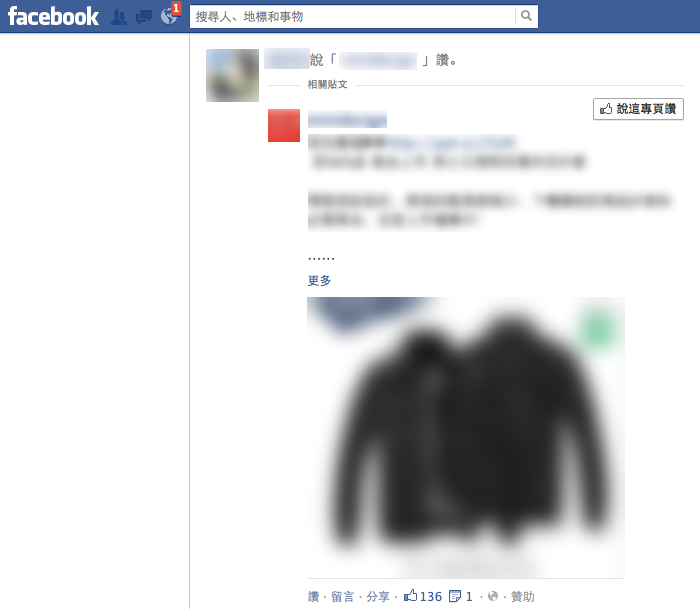
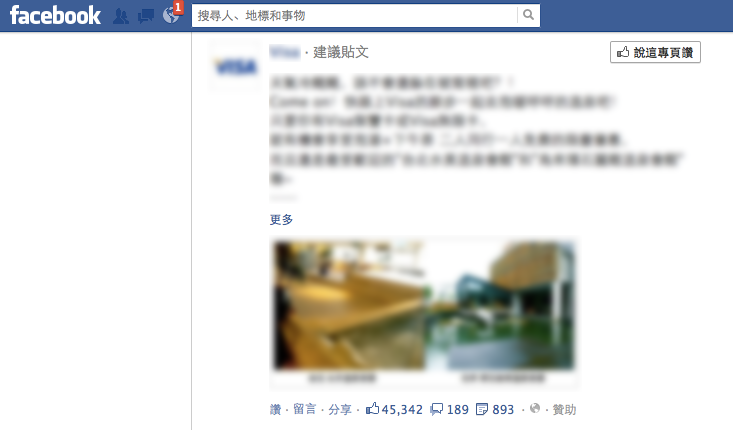

臉書討人厭專頁推薦移除器
Google Chrome 瀏覽器插件
下載
按我下載
安裝方式
- 下載NoFBPageRecommend.crx檔案
- 於瀏覽器網址列輸入chrome://extensions

- 將NoFBPageRecommend.crx拖曳進入瀏覽器

- 完成安裝

原始碼
我把Code都放在這裡了
說明
最近臉書開始出現這種「推薦粉絲專頁」，我覺得很討厭，根本廣告，所以就寫了一個超陽春Chrome小插件把這些東西移除掉，不過沒放上Store，大家自己想辦法安裝囉，看是用開發人緣(?)模式或是把下載下來的檔案再拖進瀏覽器看能不能安裝這樣。
目前可移除類型
推薦粉絲專頁

建議貼文

以上兩種有朋友說讚者
